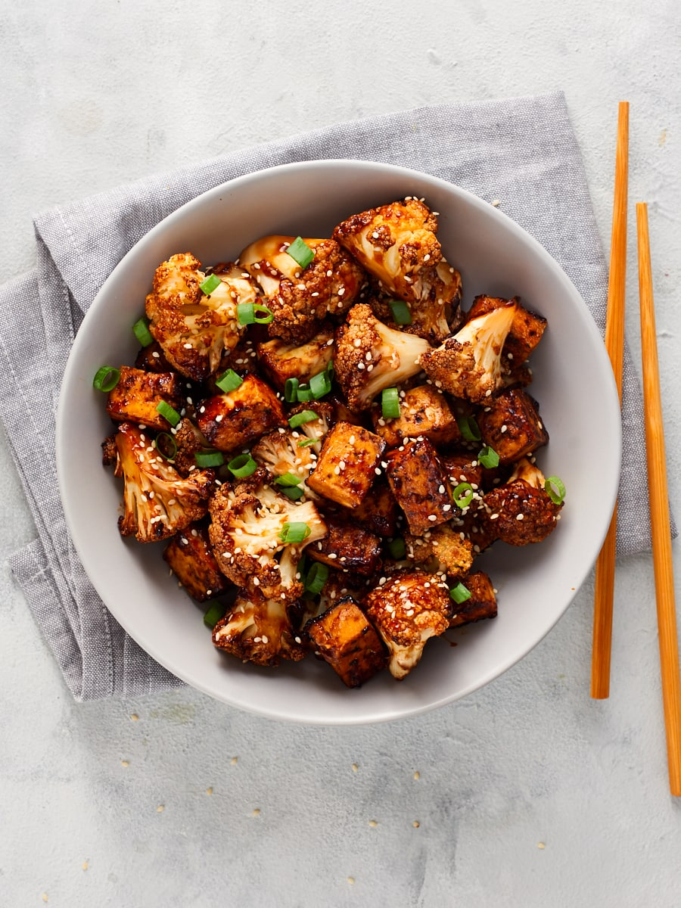

Baked Teriyaki Tofu and Cauliflower
Healthy and full of protein
Combine it with rice and some crunchy veggies for a perfect meal prep bowl
Super easy to throw together, with minimal hands-on time. All you need to do is chop, mix and go.
Section 1: Ingredients
Tofu and Cauliflower
- 400g block tofu pressed and cubed (tofu Teriyaki, Adobo tofu, or Mongolian tofu)
- 1 head cauliflower chopped into florets
- 2 tbsp corn flour
- 60 ml soy sauce (¼ cup)
- 60 ml water (¼ cup)
- 2 tbsp maple syrup
- 1 tsp sesame oil
- 2 cloves garlic minced
- 1 tsp fresh grated ginger
- 1.5 tbsp rice vinegar
For Serving
- 600 g cooked rice (3 cups)
- 1 handful steamed raw veggies per bowl
- 4 tsp sesame seeds
- 1 bunch sliced green onions
Section 2: Instructions
- Preheat the oven to 180°/fan 160°.
- Lay out the cubed tofu and cauliflower florets on a large baking sheet or dish. Sprinkle them with 2 tablespoons of corn flour, mix it around, and bake in the oven for 10 minutes.
- Meanwhile, mix the soy sauce, water, maple syrup, sesame oil, garlic, ginger, and rice vinegar together in a small pan. Place this over a medium heat, and let it simmer away for 10 minutes, until slightly thickened and glossy.
- After 10 minutes, take the cauliflower and tofu out of the oven and pour the sauce over them. Give them a good mix around until they’re all coated. The sauce should begin to thicken here as it mixes with the cornflour coating on the tofu and cauliflower.
- Return it to the oven, and cook for 10 more minutes.
- Serve with rice, steamed or raw veggies, and a sprinkling of sesame seeds and green onions.
NOTES:
- Types of firm tofu: Some of which have already been pressed or don’t require pressing, and some which do. Check the packaging to see which type of firm tofu you have. If you aren’t sure, generally the tofu which is sitting in a lot of water will need pressing; tofu which is almost vacuum packed with only a tiny bit of water will not.
- Vegan Teriyaki Sauce: In order to make the signature teriyaki flavour, combine soy sauce, water, a little maple syrup and sesame oil, garlic and ginger puree, and a splash of rice vinegar.